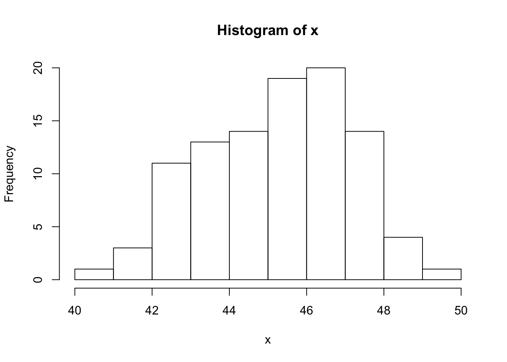
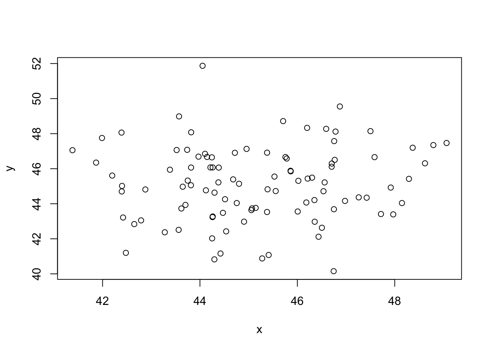

#help() - Gives description of an R topic. Usually includes a definition, general code, example of application
help(mean)#? - Gives a description of an R topic
?median#ls() - Lists variables in the environment
ls()#dir() - Lists files in default directory
dir()#list.files() - Lists files in default directory
list.files()#save() - Saves files in R
save(file)#load() - Loads a file in R
load(file)#data() - Loads a dataset from R
data()#library() - Loads a package to be used in an R program
library(ggplot2)#read.table() - Reads a file into table in R
read.table(file)#read.csv() - Reads a csv file into table in R
read.csv(file)#scan() - Read data into a vector or list from the console or file
x <- scan()
x#print() - Prints an argument
print("This was printed")## [1] "This was printed"#cat() - function prints the objects, concatenates the representations
x <- "EGG"
y <- "PERSON"
cat(x,y)## EGG PERSON#write.table() - Writes a variable as a table in to file
x <- sample(c(1:100), 100)
write(x, pathway)#c() - Concatenates values, variables together
x <- (1:10)
y <- (11:20)
c(x,y)## [1] 1 2 3 4 5 6 7 8 9 10 11 12 13 14 15 16 17 18 19 20#from:to - Creates a list of numbers at from a starting value to an ending value.
1:10## [1] 1 2 3 4 5 6 7 8 9 10#seq() - Generates a standard pattern from beginning to end, by a given increment or decrement
seq(1,100,5) ## [1] 1 6 11 16 21 26 31 36 41 46 51 56 61 66 71 76 81 86 91 96#rep() - Repeats arguments in the given order, for a number of iterations
rep(1:10,2)## [1] 1 2 3 4 5 6 7 8 9 10 1 2 3 4 5 6 7 8 9 10#data.frame() - Converts variables into a data frame
x <- (1:5)
y <- (6:10)
z <- data.frame(x,y)
z## x y
## 1 1 6
## 2 2 7
## 3 3 8
## 4 4 9
## 5 5 10#list() <- Creates a vector list of variables
list("A", "B", "C", "D") ## [[1]]
## [1] "A"
##
## [[2]]
## [1] "B"
##
## [[3]]
## [1] "C"
##
## [[4]]
## [1] "D"#matrix() - Creates a matrix, a set that contains at least
matrix(c(1:6),nrow=3,ncol=2)## [,1] [,2]
## [1,] 1 4
## [2,] 2 5
## [3,] 3 6#factor() - Converts an object to factor class
x <- c("Male", "Female", "Male", "Female")
factor(x)## [1] Male Female Male Female
## Levels: Female Maleclass(factor(x))## [1] "factor"#rbind() - Combines vector, matrix or data frame by rows
x <- matrix(c(1:6),nrow=3,ncol=2,byrow=TRUE)
y <- matrix(c(1:6),nrow=3,ncol=2,byrow=TRUE)
rbind(x,y)## [,1] [,2]
## [1,] 1 2
## [2,] 3 4
## [3,] 5 6
## [4,] 1 2
## [5,] 3 4
## [6,] 5 6#cbind() - Combines vector, matrix or data frame by columns
#cbind()
x <- matrix(c(1:6),nrow=3,ncol=2,byrow=TRUE)
y <- matrix(c(1:6),nrow=3,ncol=2,byrow=TRUE)
cbind(x,y)## [,1] [,2] [,3] [,4]
## [1,] 1 2 1 2
## [2,] 3 4 3 4
## [3,] 5 6 5 6#x[n] - nth element
x <- sample(c(1:100), 10)
x## [1] 70 62 1 8 50 49 19 93 44 82x[2]## [1] 62#x[-n] - All but nth element
x <- sample(c(1:10), 10)
x## [1] 4 6 5 8 10 1 7 2 9 3x[-2]## [1] 4 5 8 10 1 7 2 9 3#x[(1:n)] elements from n+1 to the end
x <- sample(c(1:10), 10)
x## [1] 7 3 6 4 2 1 5 8 9 10x[(1:4)] ## [1] 7 3 6 4#x[-(1:n)] - Elements from n+1 to the end
x <- sample(c(1:10), 10)
x## [1] 6 3 8 1 10 7 2 5 4 9x[-(1:4)]## [1] 10 7 2 5 4 9#x[c(n, n, n)] - Specific n elements
x <- sample(c(1:10), 10)
x## [1] 3 1 10 2 9 8 4 6 5 7x[c(1,2,10)] ## [1] 3 1 7#x[“name”] - Elements named “name”
x <- rep(c("X", "Y"), 2)
x## [1] "X" "Y" "X" "Y"x["X"] ## [1] NA#x[x>n] - All elements greater than n
x <- 1:10
x## [1] 1 2 3 4 5 6 7 8 9 10x[x>4] ## [1] 5 6 7 8 9 10#x[x > n1 & x < n2] - All elements greather than n1 and less than n2
x <- 1:10
x## [1] 1 2 3 4 5 6 7 8 9 10x[x>4 & x < 8] ## [1] 5 6 7#x[x %in% c(“a”,“and”,“the”)] - All elements in given set
x <- 1:10
x## [1] 1 2 3 4 5 6 7 8 9 10x[x %in% c(1, 2, 10, 30)]## [1] 1 2 10#x[n] - List with elements n
x <- list("First", "Second", "Third")
x## [[1]]
## [1] "First"
##
## [[2]]
## [1] "Second"
##
## [[3]]
## [1] "Third"x[2]## [[1]]
## [1] "Second"#x[[n]] - nth element of the list
x <- list("First", "Second", "Third")
x## [[1]]
## [1] "First"
##
## [[2]]
## [1] "Second"
##
## [[3]]
## [1] "Third"x[[1]]## [1] "First"#x[[“name”]] - Element of the list named “name”
x <- list("First", "Second", "Third")
x## [[1]]
## [1] "First"
##
## [[2]]
## [1] "Second"
##
## [[3]]
## [1] "Third"x[["First"]]## NULL#x$name - Id
x <- list("First", "Second", "Third")
x## [[1]]
## [1] "First"
##
## [[2]]
## [1] "Second"
##
## [[3]]
## [1] "Third"x$"First"## NULL#x[a,b] - Element at row a, column b
x <- matrix(c(1:9),nrow=3,ncol=3)
x## [,1] [,2] [,3]
## [1,] 1 4 7
## [2,] 2 5 8
## [3,] 3 6 9x[3,2]## [1] 6#x[i,] - Row a
x <- matrix(c(1:9),nrow=3,ncol=3)
x## [,1] [,2] [,3]
## [1,] 1 4 7
## [2,] 2 5 8
## [3,] 3 6 9x[1,]## [1] 1 4 7#x[,b] - Column b
x <- matrix(c(1:9),nrow=3,ncol=3)
x## [,1] [,2] [,3]
## [1,] 1 4 7
## [2,] 2 5 8
## [3,] 3 6 9x[,2]## [1] 4 5 6#x[,c(1,2)] - columns 1 and 3
x <- matrix(c(1:9),nrow=3,ncol=3)
x## [,1] [,2] [,3]
## [1,] 1 4 7
## [2,] 2 5 8
## [3,] 3 6 9x[,c(1,3)]## [,1] [,2]
## [1,] 1 7
## [2,] 2 8
## [3,] 3 9#x[“name”,] - Row named “name”
x <- matrix(c(1:9),nrow=3,ncol=3)
x## [,1] [,2] [,3]
## [1,] 1 4 7
## [2,] 2 5 8
## [3,] 3 6 9x[1,]## [1] 1 4 7#x[“name”,] - Column named “name”
x <- (1:3)
y <- (4:6)
z <- data.frame(x,y)
z## x y
## 1 1 4
## 2 2 5
## 3 3 6z["x"]## x
## 1 1
## 2 2
## 3 3#x$nameid - Column name
x <- (1:3)
y <- (4:6)
z <- data.frame(x,y)
z## x y
## 1 1 4
## 2 2 5
## 3 3 6z$x## [1] 1 2 3#as.data.frame() - Converts variable to a dataframe
x <- c(1:5)
x## [1] 1 2 3 4 5as.data.frame(x)## x
## 1 1
## 2 2
## 3 3
## 4 4
## 5 5#as.numeric() - Converts variable to numeric data type
x <- c("1","2","3","4")
class(x)## [1] "character"class(as.numeric(x)) ## [1] "numeric"#Converts variable to a logical data type
x <- c("T", "F", "T", "F")
class(x)## [1] "character"as.logical(x) ## [1] TRUE FALSE TRUE FALSE#Converts varaiable to character data type
x <- c(1, 2, 3, 4)
class(x)## [1] "numeric"as.character(x) ## [1] "1" "2" "3" "4"#is.na() - Determines if variable is "NA" value. Returns True or False.
x <- NA
is.na(x)## [1] TRUE#is.null() - Determines if value is undefined. Returns True or False
j <- NULL
is.null(j)## [1] TRUEk <- 1
is.null(k) ## [1] FALSE#Determines if value is a dataframe Returns True or False
x <- (1:5)
y <- (6:10)
z <- data.frame(x,y)
is.data.frame(z)## [1] TRUE#Determines if value is a numeric data type. Returns True or False.
x <- c(1,2,3)
is.numeric(x) ## [1] TRUEy <- c("1", "2", "3")
is.numeric(y) ## [1] FALSE#Determines if value is a character data type. Returns True or False.
x <- c("1", "2", "3")
is.character(x) ## [1] TRUE#Determines length of value
x <- c(1:100)
length(x) ## [1] 100#Gets or sets the length of a vector (list) or other objects
x <- matrix(c(3,5,7,1,9,4),nrow=3,ncol=2,byrow=TRUE)
dim(x)## [1] 3 2#dimnames() - Dimension names of an object
x <- matrix(c(3,5,7,1,9,4),nrow=3,ncol=2,byrow=TRUE)
dimnames(x) ## NULL#nrow() - Identifies the number of rows in x
x <- matrix(c(3,5,7,1,9,4),nrow=3,ncol=2,byrow=TRUE)
nrow(x) ## [1] 3#ncol() - Identifies the number of columns in x
x <- matrix(c(3,5,7,1,9,4),nrow=3,ncol=2,byrow=TRUE)
ncol(x) ## [1] 2#Identifies data type of variable
x <- c("First", "Second", "Third")
class(x) ## [1] "character"#Accesses the attribute of an object attribute
x <- matrix(c(3,5,7,1,9,4),nrow=3,ncol=2,byrow=TRUE)
attributes(x)## $dim
## [1] 3 2#which.max() - Identifies index that has the highest value in a variable
which.max(c(32,34,3,2,212,33243,34234,532))## [1] 7#which.min() - Identifies index that has the lowest value in a variable
which.min(c(32,34,3,2,212,33243,34234,532))## [1] 4#which() - Identifies index of an argument that fulfills a condition
x <- c(20,3,2, 4,30,2,3,5,32,432)
which(x > 100)## [1] 10#sort() - Arranges a vector in either descending or ascending order
x <- c(20,3,2, 4,30,2,3,5,32,432)
sort(x,decreasing = F)## [1] 2 2 3 3 4 5 20 30 32 432#unique() = Returns unique values of a variable
x <- c(1,1,1,1,1,1,2,2,2,2,2,2,2,23,3,3,3,3,33,3,3)
unique(x)## [1] 1 2 23 3 33#table() - Converts a variable into a table and counts the frequency of its unique values
x <- c(1,1,1,1,1,1,2,2,2,2,2,2,2,23,3,3,3,3,33,3,3)
table(x)## x
## 1 2 3 23 33
## 6 7 6 1 1#sample() - Creates a random sample of numbers, letters, etc.
x <- sample(1:10, 10)
x## [1] 9 6 4 2 5 8 3 1 10 7#max()- Identifies maximum value of a set of values
max(1,2,4,5,6,9,12,12,43,2,1,2,3,2,1,2,23) ## [1] 43#min() - Identifies minimum value of a set of values
min(1,2,4,5,6,9,12,12,43,2,1,2,3,2,1,2,23) ## [1] 1#range() - Identifies range of a set of values
range(1,2,4,5,6,9,12,12,43,2,1,2,3,2,1,2,23) ## [1] 1 43#sum() -Identifies sum of a set of values
sum(1,2,4,5,6,9,12,12,43,2,1,2,3,2,1,2,23) ## [1] 130#mean() - Identifies mean of a set of values
mean(1,2,4,5,6,9,12,12,43,2,1,2,3,2,1,2,23) ## [1] 1#median() - Identifies median of a set of values
median(1,2,4,5,6,9,12,12,43,2,1,2,3,2,1,2,23) ## [1] 1#var() - Identifies variance of a set of values
var(c(1,2,4,5,6,9,12,12,43,2,1,2,3,2,1,2,23)) ## [1] 116.3676#sd() - Identifies standard deviation of a set of values
sd(c(1,2,4,5,6,9,12,12,43,2,1,2,3,2,1,2,23)) ## [1] 10.78738#cor() - Identifies correlation of a set of values
cor(c(1,2,4,5,6,9,12,12,43,2,1,2,3,2,1,2,23), c(1,2,23,3,4,4,5,5,6,7,4,3,3,2,3,5,6)) ## [1] 0.09516114#round() - Rounds a value to a given place
cor(c(1,2,4,5,6,9,12,12,43,2,1,2,3,2,1,2,23), c(1,2,23,3,4,4,5,5,6,7,4,3,3,2,3,5,6))## [1] 0.09516114round((cor(c(1,2,4,5,6,9,12,12,43,2,1,2,3,2,1,2,23), c(1,2,23,3,4,4,5,5,6,7,4,3,3,2,3,5,6))), 2)## [1] 0.1#abs() - Identifies absolute value
abs(-100 + 0) ## [1] 100#t() - Transposes a dataframe or matrix
x <- matrix(c(3,5,7,1,9,4),nrow=3,ncol=2,byrow=TRUE)
x## [,1] [,2]
## [1,] 3 5
## [2,] 7 1
## [3,] 9 4t(x)## [,1] [,2] [,3]
## [1,] 3 7 9
## [2,] 5 1 4#diag() - Diagonal matrix of x
x <- matrix(c(3,5,7,1,9,4),nrow=3,ncol=3,byrow=TRUE)
x## [,1] [,2] [,3]
## [1,] 3 5 7
## [2,] 1 9 4
## [3,] 3 5 7diag(x)## [1] 3 9 7#colSums() - Returns the sum from each row of x
x <- matrix(c(3,5,7,1,9,4),nrow=3,ncol=2,byrow=TRUE)
x## [,1] [,2]
## [1,] 3 5
## [2,] 7 1
## [3,] 9 4colSums(x)## [1] 19 10#Returns the mean from each row of x
x <- matrix(c(3,5,7,1,9,4),nrow=3,ncol=2,byrow=TRUE)
x## [,1] [,2]
## [1,] 3 5
## [2,] 7 1
## [3,] 9 4rowMeans(x)## [1] 4.0 4.0 6.5#Returns the mean from each column of x
x <- matrix(c(3,5,7,1,9,4),nrow=3,ncol=2,byrow=TRUE)
x## [,1] [,2]
## [1,] 3 5
## [2,] 7 1
## [3,] 9 4colMeans(x)## [1] 6.333333 3.333333#aaply() - Apply a function on multiple cases at once
a <- c(T, F, T)
b <- c(1,2,3)
c <- c("First", "Second", "Third")
d <- data.frame(a,b,c)
apply(d, c(1,2), class)## a b c
## [1,] "character" "character" "character"
## [2,] "character" "character" "character"
## [3,] "character" "character" "character"#aggregate() - Takes an aggregate of a given set of values
Score <- sample(c(1:100), 10)
Gender <- sample(c("Boy", "Girl"), 10, replace = T)
FinalGrades <- data.frame(Score,Gender)
aggregate(Score ~ Gender, FinalGrades, mean)## Gender Score
## 1 Boy 54.00000
## 2 Girl 40.71429#paste() - Concatenate vectors after converting to character.
b <- 1:10
c <- paste(b)
b## [1] 1 2 3 4 5 6 7 8 9 10c## [1] "1" "2" "3" "4" "5" "6" "7" "8" "9" "10"#strsplit() - Splits character vector x into substrings by matching substring
strsplit("BR_OOK_LYN_CO_LL_EGE", "_")## [[1]]
## [1] "BR" "OOK" "LYN" "CO" "LL" "EGE"#tolower() - Converts text to lower case
tolower("LOWERCASE") ## [1] "lowercase"#toupper() - Converts text to lower case
toupper("uppercase") ## [1] "UPPERCASE"#hist() - Base histogram plot
x <- rnorm(100, 45, 2)
hist(x)
#plot() - Plots a regular baseplot based on the type and number of vairables
x <- rnorm(100, 45, 2)
y <- rnorm(100, 45, 2)
plot(x,y) 
#rnorm() - Compute a series of values that would make a normal distribution
x <- rnorm(100, 45, 2)
x## [1] 47.11626 42.05024 44.03305 42.90435 44.61878 42.28331 44.38794
## [8] 48.01557 45.50329 47.04145 45.35563 47.13804 45.25775 42.30785
## [15] 44.13071 43.27225 45.84690 48.02276 46.47373 44.67369 45.03967
## [22] 44.30713 43.22937 47.24315 42.72885 43.85509 45.11856 45.36509
## [29] 45.98023 46.06014 44.71322 42.02330 43.26672 48.01633 45.58435
## [36] 44.85884 44.01168 46.43757 46.72389 46.03115 47.41932 44.21595
## [43] 44.88874 43.15969 45.98834 45.89107 44.19224 40.88676 45.73996
## [50] 39.28335 50.14175 44.14082 46.24000 45.24446 42.54441 46.84228
## [57] 44.48814 46.59352 46.94668 49.42378 43.52350 46.73262 45.42041
## [64] 46.33037 43.70914 45.00563 44.16815 44.38644 42.90029 45.21666
## [71] 45.26763 46.65521 43.92173 42.80090 46.57586 45.59233 46.95931
## [78] 45.24617 46.72746 47.53935 41.02136 45.59233 44.05126 44.54525
## [85] 43.17355 44.37820 46.89960 46.97460 45.95544 42.27771 40.70177
## [92] 41.78501 42.02145 45.06688 42.94414 43.79904 46.09179 45.97000
## [99] 45.58776 42.11307#runif() - Compute a series of values within a range
x <- runif(100, 45, 2)
x## [1] NaN NaN NaN NaN NaN NaN NaN NaN NaN NaN NaN NaN NaN NaN NaN NaN NaN
## [18] NaN NaN NaN NaN NaN NaN NaN NaN NaN NaN NaN NaN NaN NaN NaN NaN NaN
## [35] NaN NaN NaN NaN NaN NaN NaN NaN NaN NaN NaN NaN NaN NaN NaN NaN NaN
## [52] NaN NaN NaN NaN NaN NaN NaN NaN NaN NaN NaN NaN NaN NaN NaN NaN NaN
## [69] NaN NaN NaN NaN NaN NaN NaN NaN NaN NaN NaN NaN NaN NaN NaN NaN NaN
## [86] NaN NaN NaN NaN NaN NaN NaN NaN NaN NaN NaN NaN NaN NaN NaN#Function
SelfSquare <- function(x){
x <- x * x
}
print(SelfSquare(4))## [1] 16#For loop
for (i in c(1:5)){
print(i)
}## [1] 1
## [1] 2
## [1] 3
## [1] 4
## [1] 5#While loop
i <- 1
while(i <= 5){
print(i)
print("i is less than or equal to 5")
i <- i +1
}## [1] 1
## [1] "i is less than or equal to 5"
## [1] 2
## [1] "i is less than or equal to 5"
## [1] 3
## [1] "i is less than or equal to 5"
## [1] 4
## [1] "i is less than or equal to 5"
## [1] 5
## [1] "i is less than or equal to 5"#If else
i <- 6
if (i <= 5){
print(i)
print("i is less than or equal to 5")
} else {
print(i)
print("i is greater than 5")
}## [1] 6
## [1] "i is greater than 5"#return() - Sends back a value from within a function in regards to it's function
addition <- function(x){
if (x > 5){
return(x +1)
} else{
return(x +2)
}
}
addition(1)## [1] 3addition(10)## [1] 11#break() - Usually used in while loops to fall out of the loop
i <- 1
while(i <= 5){
print(i)
print("i is less than or equal to 5")
i <- i +1
if(i == 3){
print(i)
print("Here is where the loop will break")
break
}
}## [1] 1
## [1] "i is less than or equal to 5"
## [1] 2
## [1] "i is less than or equal to 5"
## [1] 3
## [1] "Here is where the loop will break"